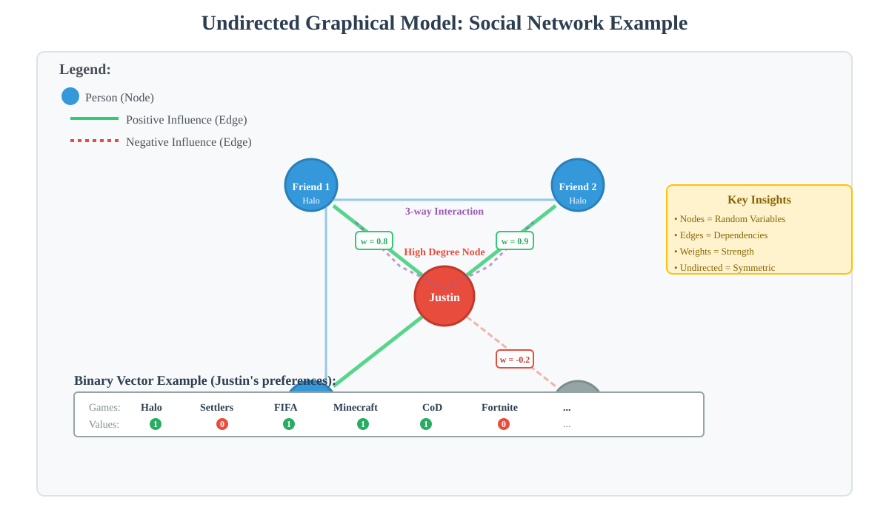
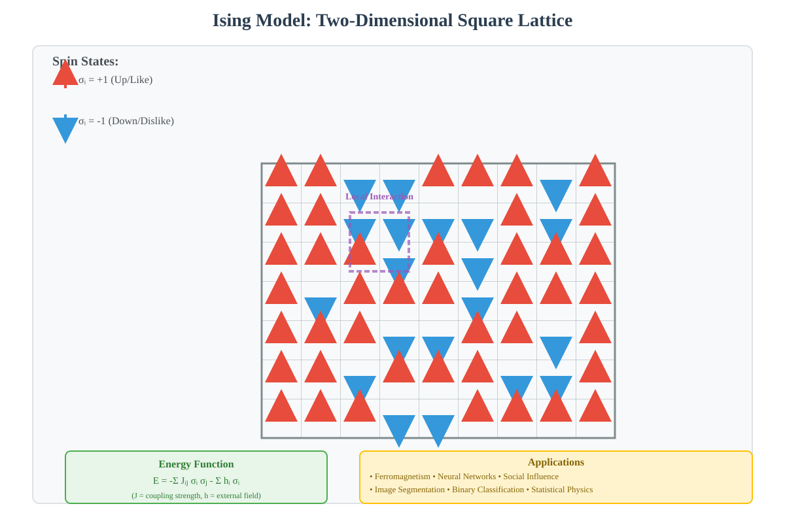
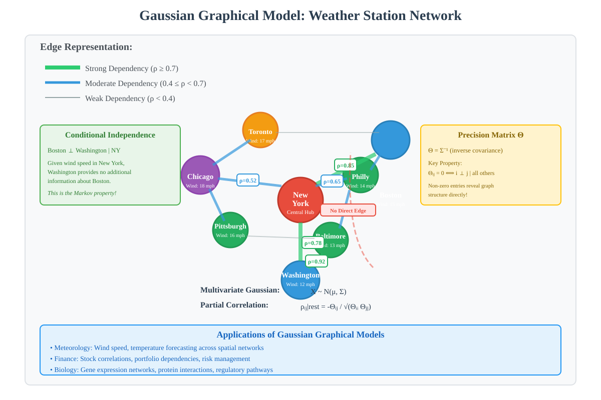
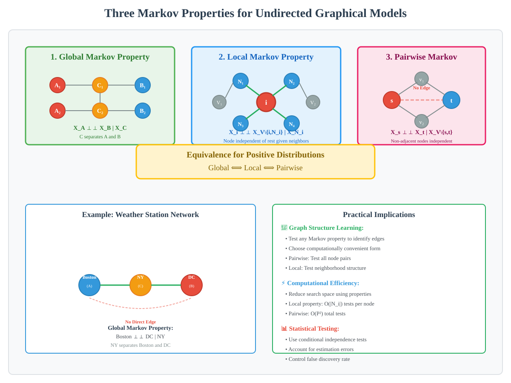
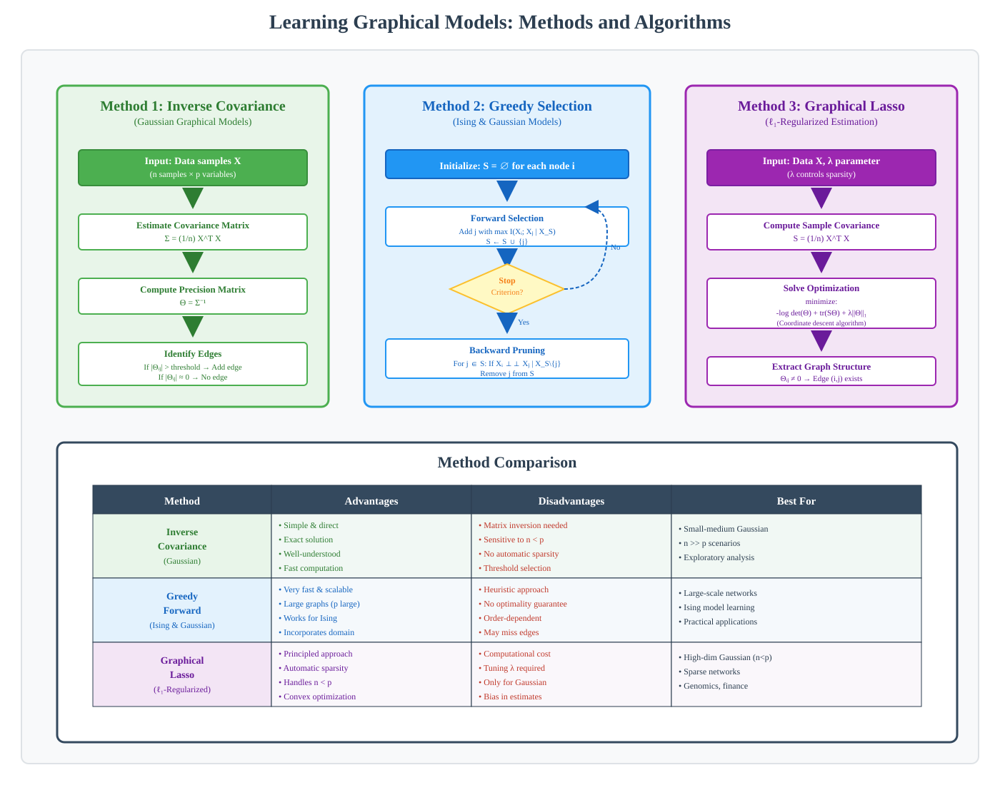

Undirected Graphical Models: Ising and Gaussian Models
📋 Quick Navigation
- Introduction
- Ising Models
- Gaussian Graphical Models
- Markov Properties
- Learning Methods
- Practical Applications
- References & Further Reading
Introduction
What are Undirected Graphical Models?
Undirected graphical models (also known as Markov Random Fields) are powerful probabilistic frameworks for representing complex dependencies between random variables. In these models, nodes represent random variables and edges represent dependencies between them.
Key Characteristics:
- Nodes: Represent random variables in the system
- Edges: Represent direct dependencies between variables
- Undirected: Dependencies are symmetric (no causal direction implied)
- Markov Properties: Variables are conditionally independent given their neighbors

Real-World Example:
Consider a social network where people decide whether to play certain video games. Each person's decision is influenced by their friends' choices, creating a network of dependencies.
Binary Data Representation:
- Each person corresponds to a node in the graph
- Binary vectors represent game preferences (1 = like, 0 = dislike)
- Edge weights indicate strength of social influence
- The joint distribution inherits properties from the network structure
Higher-Order Interactions:
Graphical models can capture complex multi-way interactions:
- Pairwise interactions: Direct influence between two friends
- Three-way interactions: Combined influence of multiple friends
- Weighted interactions: Different strengths of influence
Example: Justin prefers playing Halo cooperatively with at least two friends, showing a positive three-way interaction with stronger weight.
Ising Models
Definition and Origins:
Ising models are undirected graphical models specifically designed for binary data. Originally introduced to model ferromagnetism in statistical mechanics, they are now widely used across multiple domains.
Mathematical Formulation:
The two-dimensional square-lattice Ising model consists of:
- A lattice of sites, each indexed by \(i\)
- Two possible states: \(-1\) (down) and \(+1\) (up)
- State notation: \(\sigma_i = -1\) or \(\sigma_i = +1\)

Key Properties:
- Phase Transitions: Exhibits critical behavior at specific temperatures
- Pairwise Interactions: Primarily models edge-based dependencies
- Binary States: Each node takes one of two values
- Local Dependencies: Strong connections between neighboring nodes
Applications of Ising Models:
- Neuroscience: Modeling neural spike patterns and brain connectivity
- Social Networks: Likes and dislikes of YouTube videos or Facebook posts
- Computer Vision: Image segmentation and pattern recognition
- Signal Processing: Binary signal analysis and noise reduction
- Economic Modeling: Binary decision-making processes
- Statistical Mechanics: Ferromagnetism and phase transitions
Why Use Ising Models for Binary Data?
Ising models excel at capturing dependencies in binary settings because:
- They naturally represent two-state systems
- Computational methods are well-established
- They capture saturation effects in binary decisions
- Edge weights represent influence strength effectively
Limitations:
- Not suitable for continuous data (use Gaussian graphical models instead)
- Saturation effects can make weak edges difficult to detect
- Binary constraints limit expressiveness for graded phenomena
Gaussian Graphical Models
Definition and Structure:
Gaussian graphical models are undirected graphical models for continuous data, where variables follow a multivariate Gaussian (normal) distribution.
Visual Representation:
- Circles: Represent variables or items
- Lines: Visualize relationships between variables
- Line Thickness: Represents strength of relationships
- Absence of Lines: Implies no or very weak relationships

Partial Correlations:
The key insight of Gaussian graphical models is that edges capture partial correlations:
Partial Correlation: The correlation between two variables when controlling for all other variables in the dataset.
Advantages of Partial Correlations:
- Avoids spurious correlations
- Identifies direct dependencies
- Controls for confounding variables
- Reveals true causal structure
Why Gaussian Models for Continuous Data?
The Gaussian distribution is preferred for continuous phenomena due to:
Mathematical Tractability:
- Bell-shaped form is easy to handle analytically
- Closed-form solutions for many operations
- Efficient computational algorithms
Central Limit Theorem:
Averages of many independent random variables converge to a normal distribution, making Gaussian models appropriate for:
- Physical quantities as sums of independent contributions
- Measurement errors
- Gene expression levels
- Wind speed and weather patterns
- Human height (genetic and environmental factors)
Wind Speed Modeling Example:
Consider weather stations across a country:
Graph Structure:
- Nodes: Weather stations
- Edges: Conditional dependencies between stations
Conditional Independence:
If we know the wind speed in New York, then:
- Wind speed in Washington provides no additional information about Boston
- Boston and Washington are conditionally independent given New York
- This follows the Markov property
Geographic Constraints:
- Nodes typically connect to geographically close stations
- Mountains or terrain features can create conditional independence
- Edges are removed between spatially close but conditionally independent stations
Applications of Gaussian Graphical Models:
- Meteorology: Wind speed and temperature forecasting
- Finance: Stock market interactions and portfolio dependencies
- Biology: Gene expression networks and regulatory relationships
- Climate Science: Spatial dependencies in climate variables
- Systems Biology: Protein interaction networks
Markov Properties
Undirected graphical models satisfy various Markov properties that characterize conditional independence relationships.

Notation:
For a random vector \(X = (X_1, \ldots, X_d)\) and graph \(G = (V, E)\):
- \(V\) = set of vertices
- \(E\) = set of edges
- \(\perp\!\!\!\perp\) = conditionally independent
- \(|\) = given (conditioning on)
Three Fundamental Markov Properties:
1. Global Markov Property:
A probability distribution \(P\) satisfies the global Markov property if:
For any disjoint vertex subsets \(A\), \(B\), and \(C\), where \(C\) separates \(A\) and \(B\):
X_A ⊥⊥ X_B | X_C
Definition of Separation:
\(C\) separates \(A\) and \(B\) if every path from a node in \(A\) to a node in \(B\) passes through a node in \(C\).
Interpretation:
- Sets \(A\) and \(B\) are conditionally independent given \(C\)
- \(C\) acts as an information barrier between \(A\) and \(B\)
- All information flow from \(A\) to \(B\) passes through \(C\)
2. Local Markov Property:
A probability distribution \(P\) satisfies the local Markov property if:
The conditional distribution of a variable \(X_i\) given its immediate neighbors \(N_i\) is independent of all other nodes.
X_i ⊥⊥ X_{V\{i,N_i}} | X_{N_i}
Interpretation:
- A node depends only on its direct neighbors
- Given its neighbors, a node is independent of all distant nodes
- This is the "Markov blanket" concept
3. Pairwise Markov Property:
A probability distribution \(P\) satisfies the pairwise Markov property if:
For any pair of non-adjacent nodes \(s, t \in V\):
X_s ⊥⊥ X_t | X_{V\{s,t}}
Interpretation:
- Non-adjacent nodes are conditionally independent
- Given all other nodes, non-neighbors provide no information
- Absence of edge implies conditional independence
Equivalence of Markov Properties:
For positive distributions on undirected graphs, these three properties are equivalent:
Global Markov Property ⟺ Local Markov Property ⟺ Pairwise Markov Property
Practical Implications:
- Graph Structure Learning: Can test any of these properties to identify edges
- Computational Efficiency: Choose the most convenient property for the task
- Theoretical Analysis: Different properties suit different proofs
Learning Methods
The Learning Problem:
Given observed data, we want to:
- Structure Learning: Identify which edges exist in the graph
- Parameter Learning: Estimate the weights of these edges
Key Insight: Structure learning is often the harder problem, but once structure is known, parameter estimation is relatively straightforward.

Challenge: Correlation vs. Direct Dependency:
Problem: High correlation does not imply direct interaction.
- Two people may have similar preferences due to common friends
- Effects propagate through networks
- Distant nodes can be highly correlated without direct edges
Solution: Use conditional independence testing based on Markov properties.
Method 1: Complete Graph with Pruning (Gaussian Models):
Algorithm:
- Start: Begin with a complete graph (all nodes connected)
- Test: For each pair of nodes, test conditional independence given all other nodes
- Prune: Remove edges where conditional independence holds
- Result: Remaining edges form the learned graph structure
Implementation for Gaussian Graphical Models:
Step 1: Estimate Covariance Matrix
From data samples, compute the empirical covariance matrix \(\Sigma\).
Step 2: Compute Inverse Covariance (Precision Matrix)
Compute \(\Theta = \Sigma^{-1}\)
Step 3: Identify Edges
Critical Property: Entry \(\Theta_{ij}\) in the precision matrix is zero if and only if nodes \(i\) and \(j\) are conditionally independent given all other nodes.
Decision Rule:
If |Θ_ij| ≈ 0 → No edge between i and j
If |Θ_ij| >> 0 → Edge exists between i and j
Threshold Selection:
The threshold depends on:
- Number of samples \(N\)
- Desired confidence level
- Noise characteristics
Sample Complexity:
For a network with \(P\) nodes and maximum degree \(D\):
Required Samples:
N ≥ D² × log(P)
Detectable Edge Weights:
w ≥ √(log(P)/N)
Interpretation:
- More samples enable detection of weaker edges
- High-degree nodes require more samples
- Trade-off between sample size and edge weight detection
Method 2: Greedy Forward Selection:
Motivation: Avoid searching over all possible subsets, which is computationally intractable.
Algorithm for Finding Neighbors of Node \(i\):
Initialization:
S = ∅ (empty set of candidate neighbors)
Greedy Forward Phase:
while stopping criterion not met:
1. Find node j that provides most information about node i given S
2. Add j to S: S ← S ∪ {j}
3. Check stopping criterion
Information Criterion:
Add the node that maximizes mutual information:
j* = argmax_{j∉S} I(X_i ; X_j | X_S)
Stopping Criterion:
Stop when:
- Set size reaches maximum degree estimate
- Information gain falls below threshold
- All nodes have been considered
Backward Pruning Phase:
for each node j in S:
if X_i ⊥⊥ X_j | X_{S\{j}}:
Remove j from S
Key Insights:
- Progress at Each Step: Each addition provides new information
- Over-inclusion: May include non-neighbors, but not too many
- Markov Property Cleanup: Final pruning removes false positives
- Computational Efficiency: Linear in number of additions
Why This Works:
By the Local Markov Property, once \(S\) contains all true neighbors:
- Every other node is conditionally independent of \(i\) given \(S\)
- Additional nodes provide no information
- False positives are identifiable and removable
Advantages of Greedy Methods:
- Scalability: Can handle very large graphs
- Speed: Add one node at a time
- Flexibility: Can incorporate domain knowledge
- Practical Performance: Works well even when theoretical guarantees don't apply
Method 3: ℓ1-Regularized Methods (Graphical Lasso):
Approach: Formulate structure learning as a sparse estimation problem.
Objective Function:
minimize: -log det(Θ) + trace(SΘ) + λ||Θ||_1
Where:
- \(\Theta\) = precision matrix
- \(S\) = sample covariance matrix
- \(\lambda\) = regularization parameter
- \(\|\Theta\|_1\) = sum of absolute values of entries
Effect of ℓ1 Regularization:
- Encourages sparsity in \(\Theta\)
- Many entries become exactly zero
- Automatically performs edge selection
- Tuning \(\lambda\) controls sparsity level
Comparison of Methods:
| Method | Pros | Cons | Best For |
|---|---|---|---|
| Inverse Covariance | Simple, direct | Requires matrix inversion | Small-medium Gaussian models |
| Greedy Selection | Fast, scalable | Heuristic, no guarantees | Large graphs, Ising models |
| Graphical Lasso | Principled, automatic sparsity | Computational cost | Medium Gaussian models |
Challenges with Ising Models:
Saturation Effect:
In binary models, strong influences can cause saturation:
- If many friends strongly influence you, decision becomes deterministic
- Additional weak edges have minimal impact
- Difficult to detect weak neighbors in presence of strong ones
Continuous vs. Binary:
- Gaussian Models: Weak neighbors always have noticeable additive effect
- Ising Models: Weak effects can be masked by strong influences
- Implication: Ising models require more sophisticated methods or more data
Practical Applications
📱 Social Networks:
Problem: Understanding game preferences and social influence
Application:
- Model binary decisions (play/don't play) as Ising model
- Identify social influence networks
- Predict game adoption patterns
- Recommend games based on friend networks
🧠 Neuroscience:
Problem: Understanding neural connectivity and spike patterns
Ising Models for Neural Spikes:
- Binary states: neuron firing or not firing
- Edges represent functional connectivity
- Detect synchronized firing patterns
Gaussian Models for fMRI:
- Continuous BOLD signals from brain regions
- Partial correlations reveal direct functional connections
- Control for indirect correlations through other regions
📈 Finance:
Problem: Modeling stock market dependencies
Application:
- Nodes represent stocks or financial instruments
- Edges capture direct dependencies (not just correlations)
- Identify market structure and risk factors
- Portfolio optimization using dependency structure
🌡️ Weather Forecasting:
Problem: Predicting weather patterns across regions
Application:
- Nodes represent weather stations
- Gaussian graphical model for continuous variables (temperature, wind speed)
- Markov property: local dependencies dominate
- Geographic constraints inform structure
🧬 Genomics:
Problem: Understanding gene regulatory networks
Application:
- Nodes represent genes
- Edges represent direct regulatory relationships
- Gaussian graphical models for gene expression levels
- Discover regulatory pathways and mechanisms
🖼️ Computer Vision:
Problem: Image segmentation and pattern recognition
Application:
- Pixels or regions as nodes
- Ising models for binary segmentation
- Local dependencies capture spatial coherence
- Efficient inference algorithms
💊 Drug Discovery:
Problem: Understanding protein interaction networks
Application:
- Nodes represent proteins
- Edges represent direct interactions
- Identify drug targets and pathways
- Predict side effects from network perturbations
References & Further Reading
📚 Foundational Papers:
- Ising, E. (1925). "Beitrag zur Theorie des Ferromagnetismus." Zeitschrift für Physik, 31(1), 253-258.
-
Original paper introducing the Ising model
-
Lauritzen, S. L. (1996). Graphical Models. Oxford University Press.
-
Comprehensive textbook on graphical models
-
Wainwright, M. J., & Jordan, M. I. (2008). "Graphical Models, Exponential Families, and Variational Inference." Foundations and Trends in Machine Learning, 1(1-2), 1-305.
- Modern treatment of graphical models
🔬 Learning Algorithms:
- Friedman, J., Hastie, T., & Tibshirani, R. (2008). "Sparse inverse covariance estimation with the graphical lasso." Biostatistics, 9(3), 432-441.
-
Graphical Lasso algorithm
-
Ravikumar, P., Wainwright, M. J., & Lafferty, J. D. (2010). "High-dimensional Ising model selection using ℓ1-regularized logistic regression." The Annals of Statistics, 38(3), 1287-1319.
-
Learning Ising models with high-dimensional data
-
Meinshausen, N., & Bühlmann, P. (2006). "High-dimensional graphs and variable selection with the lasso." The Annals of Statistics, 34(3), 1436-1462.
- Neighborhood selection for graph learning
💻 Software & Tools:
- scikit-learn GraphicalLasso
- Python implementation:
sklearn.covariance.GraphicalLasso -
Documentation: https://scikit-learn.org/stable/modules/covariance.html
-
R packages:
glasso: Graphical Lasso implementationhuge: High-dimensional Undirected Graph EstimationIsingSampler: Ising model sampling and estimation
🌐 Online Resources:
- Stanford CS228: Probabilistic Graphical Models Course
- MIT 6.438: Algorithms for Inference
- Coursera: Probabilistic Graphical Models Specialization by Daphne Koller
Document Information:
- Topic: Undirected Graphical Models (Ising and Gaussian)
- Target Audience: AI learners, engineers, and researchers
- Prerequisites: Basic probability theory, linear algebra, statistics
- Difficulty Level: Intermediate to Advanced
This documentation is designed for immediate deployment to MkDocs with Material theme. All SVG diagrams are referenced using the correct path structure and naming conventions.